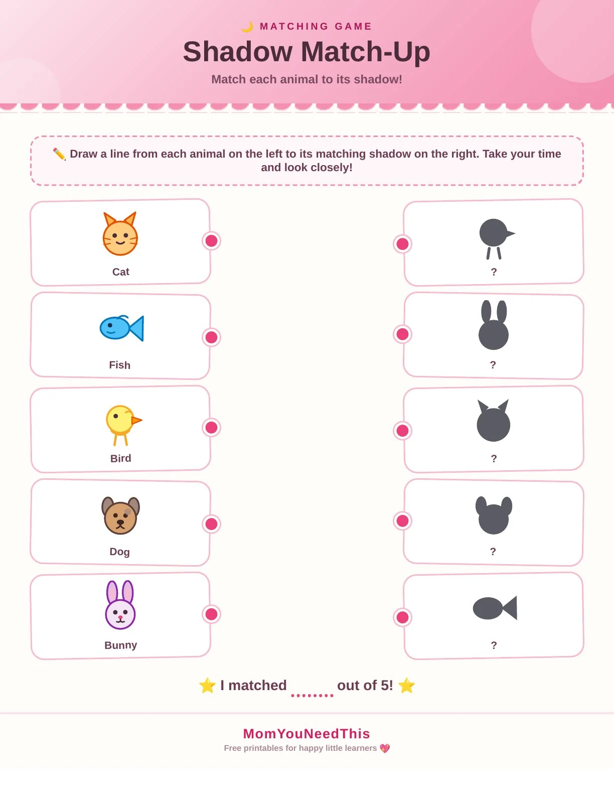

Shadow Matching Activities For Kids Match Each Object To Its Shadow
Help your child develop sharp eyes with shadow matching puzzles that turn visual discrimination practice into a fun detective game.
Quick Answer
This free printable shadow matching activity helps toddlers and preschoolers practice visual discrimination by matching objects to their shadows. The worksheet features large, clear images perfect for little learners. Download and print at home with no signup needed — great for building observation skills and attention to detail through playful matching.
At a Glance
- Ages: Toddlers and preschoolers
- Activity: Matching objects to their shadows
- Skills: Visual discrimination and shadow matching
- Format: Printable worksheets (PDF)
- Cost: Free, no signup
🌙 What Is Shadow Matching?
Shadow matching asks children to look at a colorful animal — a cat, a fish, a bird — and find its matching black silhouette from a row of shadows. It is one of the best early activities for training visual attention, because kids must notice small details like ears, tails, and fins to get the right answer.
📋 How To Use These Activities
Print the shadow matching sheet and work through the page together with a crayon. Ask your child to point to each object, name it, and then draw a line to its shadow. Work through all 5 pairs together. Keep sessions short and celebratory. The print button opens the full-size page in a new tab if you prefer to print from there.

🖨️ Download Your Free Printable
Match the animals — a cat, a fish, a bird, a dog, and a bunny — to their shadows on this printable puzzle page. Print it out, grab the crayons, and let the shadow detective work begin — no signup needed.
⬇️ Download Free Printable 🖨️ Print🎁 Free printable for toddlers & preschoolers
🔦 Shadow Hunt Around Your Home
On a sunny day, take your child outside and look at real shadows together! Have them stand still and trace their own shadow with chalk on the driveway. Point out how tree shadows, car shadows, and toy shadows change shape. This makes the printable activity come alive in the real world.
💡 Why Practice Shadow Matching?
Shadow matching strengthens visual discrimination — the ability to notice similarities and differences between shapes. This skill supports early reading (telling b from d), math (sorting and classifying), and problem-solving. It also builds concentration and patience in a calm, focused activity.
📚 Keep Exploring Matching Games
Discover more free matching and memory activities, printables, and learning ideas created for busy parents.
🎁 Back to Matching & Memory Activities🔗 More Free Printables You'll Love
Keep the learning going with these related free activities.
🔍 Same & Different 🐶 Animal Matching 🎴 Memory Cards❓ Frequently Asked Questions
What is shadow matching for preschoolers?
Shadow matching is a visual puzzle where children match a colorful object to its black silhouette. It teaches kids to notice small details like shape, size, and features — a key early learning skill.
Are these shadow matching printables really free?
Yes — every printable on MomYouNeedThis is 100% free to download and print. No signup, no payment, just tap the download button.
What age is shadow matching best for?
Shadow matching works well for ages 2 to 5. Younger toddlers can start with 3 simple pairs, while preschoolers enjoy trickier sets with similar-looking objects.